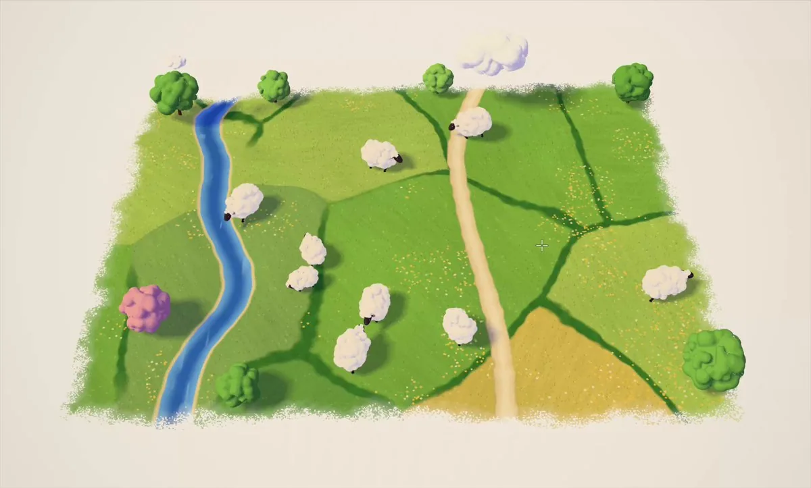
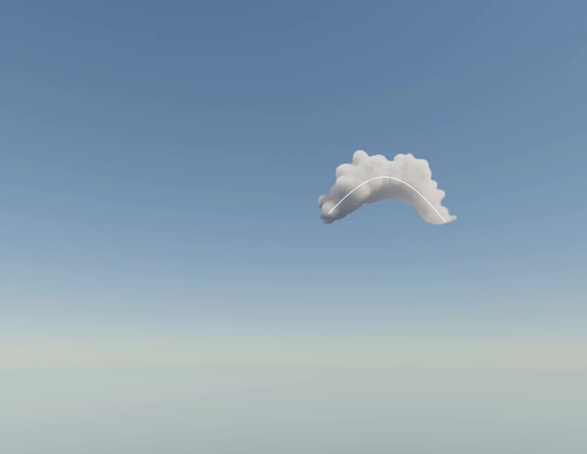
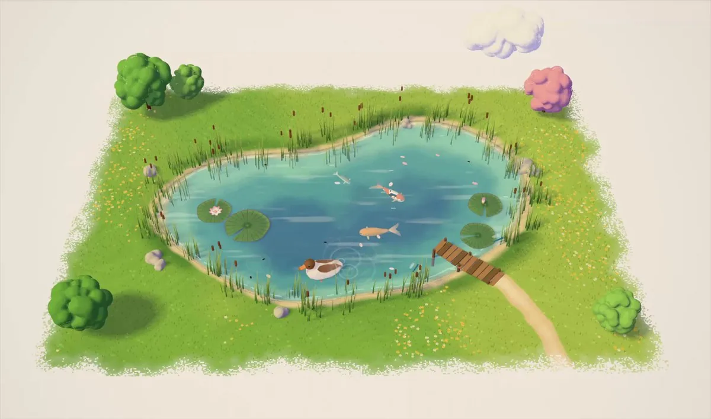

原帖：x.com/AreadneMaria/status/2114898325451444419（作者：areadne @AreadneMaria，2026-10-27 09:53 SGT）

原帖（全文翻译）
羊在吃草！🐑🌱
英文原文：“sheep grazing grass! 🐑🌱”，附一段 21 秒视频。作者没有在帖子或回复里给出代码仓库、在线链接或说明文字。
这是什么
- 一个可以交互的微缩场景，而不是一段渲染好的动画。画面是一块悬在暖白纸面上的方形地块，边缘像水彩在纸上晕开一样不规则。地块里有一条蓝色小河、一条土路、深绿色田埂把草地分成几块，右下角有一片麦田。树是圆团状的，像软软的毛球，外加一棵粉色树和一朵小云。
- 羊是“放”进去的。封面帧中央有一个十字光标。评论区有人说，看到作者把羊“生成”出来那一刻才觉得惊艳，也有人问画面上的缩放手柄是干什么用的。所以这更像一个能在画布上操作的场景编辑器或玩具，不是固定镜头的短片。
- 作者是做“设计工程”的。她的简介是：设计工程师，前 OpenAI，哥伦比亚大学计算机系，“喜欢做东西”。账号很新，只有几百个关注者，这条帖子却有近 9 万次浏览、近 1,500 次收藏。
画面是怎么做出“手作感”的（观察）
作者没有公开实现方式，以下只是从封面帧能看出来的东西，不是作者的说法。
- 边缘像纸上的颜料。地块边缘不是硬切的矩形，而是带颗粒的晕染边，让整块地像画在纸上的一张小画，而不是 3D 场景里的一块平面。
- 草地有笔触和散点。大块草色上叠了细碎的橙黄小点（像野花），颜色深浅分区，读起来像水彩或彩铅，不是平涂的色块。
- 立体的东西都是“软”的。树、羊和云都是圆鼓鼓的团块，带柔和的投影。有评论说“树看起来好想捏一下”。
- 俯视加一点透视。地块略带透视，远小近大，像一块放在桌上的模型。同一天作者另发了一条“加了一点透视”的帖子，说明透视是她在调的一个参数。
同一系列：天空、透视与池塘
这条帖子是作者一天之内连发的几个小实验之一（时间均为 SGT）：
- 10-27 07:18 · 玩天空（原帖）：“playing with the sky ☁️”（在玩天空）。画面是渐变天空里一朵蓬松的云，云上有一条白色曲线，像是沿着画出的路径生成的云。
- 10-27 09:53 · 羊在吃草：就是本帖。
- 10-27 12:22 · 加了一点透视（原帖）：“added some perspective 🤔”（加了一点透视），引用了“玩天空”那条，画面是黄昏色的天空和海平线。
- 10-27 22:38 · 池塘的忙碌一天（原帖）：“busy day at a pond 🦆🦆”（池塘忙碌的一天）。同样的纸面地块，换成了池塘：睡莲、锦鲤、香蒲、小鸭子、一座小木栈桥。


更早，作者在 10-14 发过一个“黄油捏捏乐”的小玩意，配文是“谢谢 Opus 5.5”；也发过用别人的效果做的交互抹茶演示。本帖本身没有说明用了什么工具或模型，这里不做推断。
评论区要点
- “在哪能玩？”“有教程吗？”是最常见的问题，作者没有回复，目前没有公开的试玩链接或代码。
- “这是什么风格？看着像水彩。”（@nikolai_arso）
- “缩放手柄是做什么的？👀”（@rbhalla_）：说明演示里出现了类似编辑器的选择框。
- “能让羊叠成羊塔吗？”（@TobiasAbram），以及“应该做成游戏”（@crimsonblue2eo）。
- 有人猜是 tldraw 的新功能（@jakedowns），这只是评论者的猜测，作者没有证实。
可以借鉴什么
- 把“场景”当成可以摆弄的玩具。同样是微缩世界，把镜头和时间轴交给观众（放羊、拖地块、调透视），比固定的短片更容易让人想“在哪能玩”。
- 材质感来自边缘和纸面。不规则的晕染边、纸色底、散点笔触，几样便宜的处理就能把干净的 3D 变成手作插画。
- 一天连发几个小实验。天空、透视、牧场、池塘，每条只验证一个想法，配文只有一句话。
延伸阅读（本站）
- Eian：孟菲斯微缩世界提示词：同样是“画框里的微缩世界”，但那边是用代码逐帧渲染的固定短片，这边是可以交互的场景。
- 孟菲斯微缩世界合集：原帖、提示词与社区复刻。
- Shanshui：用着色器做出颜料质感的另一个例子。